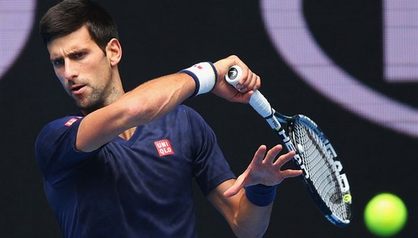

Но́вак Джо́кович (серб. Новак Ђоковић; родился 22 мая 1987 года в Белграде, СФРЮ) — сербский профессиональный теннисист, вторая ракетка мира в одиночном разряде; обладатель некалендарного («карьерного» Большого шлема) в одиночном разряде.
Отец — Срджан, мать — Дияна. Двое его младших братьев, Марко и Джордже также профессиональные теннисисты. Джокович живёт в Монте-Карло. С 2006 года тренером Джоковича является бывший словацкий теннисист Мариан Вайда; с начала 2014 года в тренерский штаб был дополнен ещё одним недавним игроком про-Тура — немцем Борисом Беккером, сотрудничество с которым серб завершил спустя три года. Подобно своему коллеге Роджеру Федереру, Джокович называет себя фанатом языков и сам разговаривает на пяти: на родном сербском, английском, немецком, итальянском и французском языках. 11 июля 2014 женился на своей давней подруге Елене Ристич, с которой встречался с конца 2005 года. 21 октября 2014 у Новака и Елены родился сын Стефан. Начал играть в теннис в возрасте четырёх лет. Летом 1993 года, в шесть лет, его заметила югославская легенда тенниса Елена Генчич. Увидев игру талантливого мальчика, она заявила: «Это величайший талант, который я видела со времен Моники Селеш». Генчич работала с молодым Джоковичем в течение следующих шести лет, прежде чем стало понятно, что он должен уехать за границу, чтобы расти и в дальнейшем. Для этого она связалась с Николой Пиличем, и в сентябре 1999 года 12-летний Джокович переехал в теннисную академию Пилича в немецком Обершлайсхайме, где провел четыре года. В возрасте 14 лет Джокович начал свою международную карьеру, выиграв чемпионаты Европы в одиночном, парном и командном разрядах.
Джокович — универсальный игрок, умело сочетающий контроль над собой и агрессивную манеру игры. Удары теннисиста с задней линии глубокие и мощные. Его бэкхенд многими признается лучшим в современном теннисе. Коронный удар Джоковича — бэкхенд по линии, который он выполняет в высоком темпе и с необходимой точностью. Умение двигаться по корту является одной из самых сильных его сторон. Эта способность позволяет ему выполнять острые атакующие удары из положений, которые на первый взгляд кажутся защитными. В сезонах 2009 и 2010 Джокович имел большие проблемы с подачей (количество двойных ошибок было наибольшим среди игроков рейтинга топ-100), но в 2011 году она вновь стала его сильной стороной. Первую подачу он обычно выполняет плоской, а вторую — кручёной. Его лучшее оружие — это приём подачи, который он может выполнять и в защитном и в атакующем стиле. Благодаря его гибкости и балансу в движениях, против Джоковича редко выполняют эйсы. Приём подачи в исполнении Джоковича эффективен как с форхенда, так и с бекхенда; он нейтрализует преимущество, которое по умолчанию имеет игрок, который подаёт мяч. Джон Макинрой назвал Джоковича одним из лучших на приёме подачи в истории тенниса. Также Джокович качественно выполняет укороченные удары и слайс с бэкхенда.
| Год | Одиночный рейтинг | Парный рейтинг |
|---|---|---|
| 2016 | 2 | _ |
| 2015 | 1 | 125 |
| 2014 | 1 | 573 |
| 2013 | 2 | 572 |
| 2012 | 1 | _ |
| 2011 | 1 | 240 |
| 2010 | 3 | 163 |
То что вы читали выше это для содержательности страницы...
Мой контент будет немного другим (своеобразным)